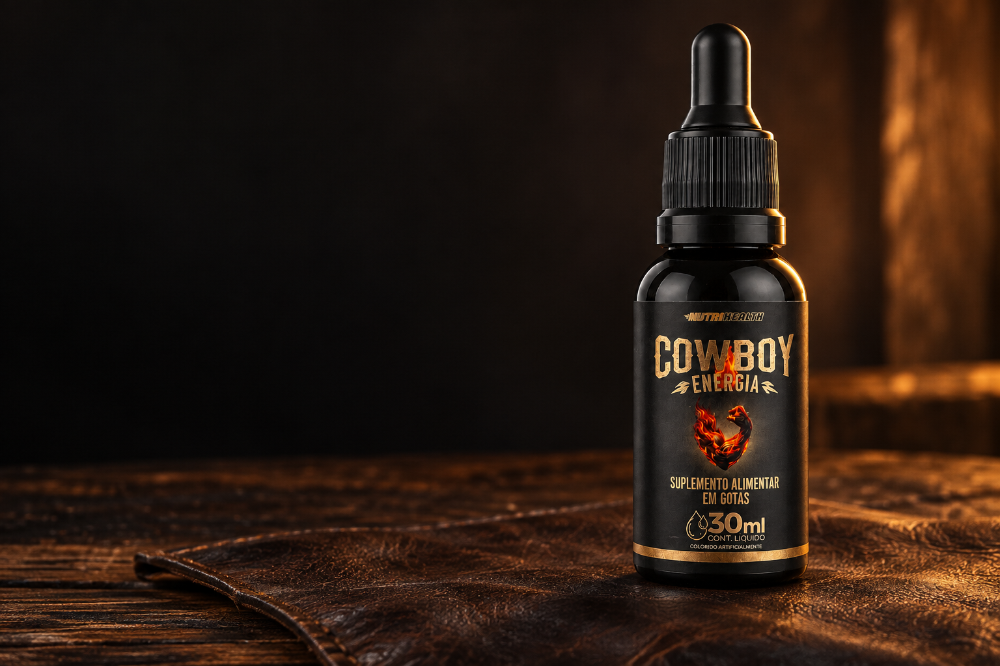
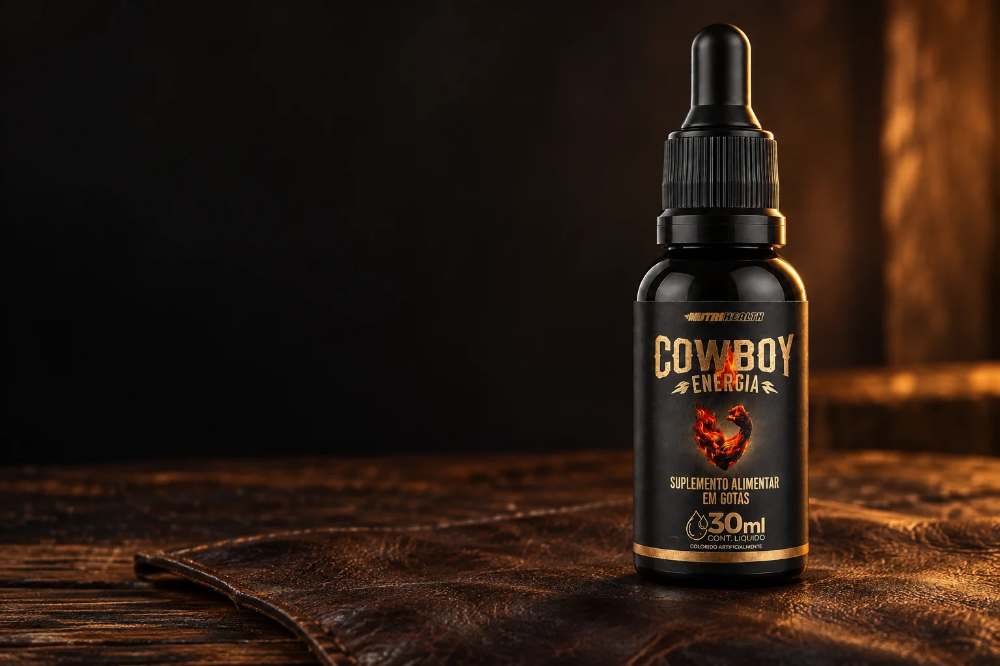
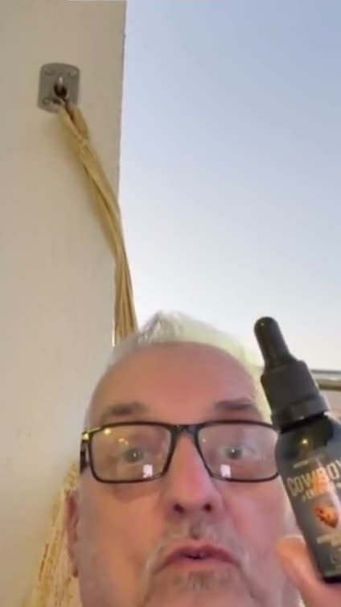
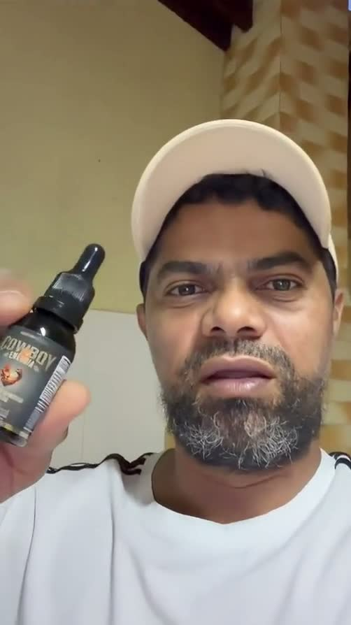
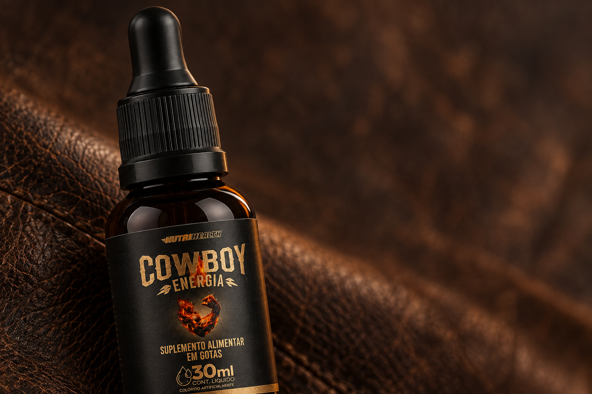

Conta-gotas
Apresentação que permite dosar em gotas, conforme a orientação do rótulo.
Suplemento alimentar em gotas · 30 mL
Personalidade forte.
Fórmula em gotas.
Seis componentes em um único frasco. Conheça o COWBOY por dentro, veja cada detalhe e ouça quem já experimentou.
Explorar o frasco
De perto, em cada ângulo
Gire o frasco e conheça a apresentação de 30 mL com conta-gotas.
Arraste para girar.
Conhecer a fórmula
Carregando visualização do frasco.
Modelo digital representativo. Consulte a composição abaixo.
O que tem dentro
Confira a composição e as quantidades declaradas no rótulo.
Quantidades por porção declarada de 12 gotas (1 mL).
Praticidade no formato
Uma fórmula em apresentação líquida, com conta-gotas e frasco de 30 mL. O essencial para conhecer o produto está aqui: formato, composição e orientação de uso.
Apresentação que permite dosar em gotas, conforme a orientação do rótulo.
Volume declarado em cada frasco.
Composição apresentada com as quantidades por porção.
Quem experimentou, conta
Dois clientes mostram o COWBOY e contam a própria experiência.

“Tá só o ouro.”
Trecho do relato em vídeo.

“A mulher agradece mais ainda.”
Trecho do relato em vídeo.
Experiências individuais. Resultados podem variar.

Compromisso COWBOY de qualidade
O frasco à vista. A fórmula por dentro. Clientes contando a própria experiência. E um canal direto com a COWBOY para tirar suas dúvidas.
Destinado a adultos a partir de 19 anos, conforme o rótulo. Não exceda a recomendação diária indicada na embalagem. Não deve ser consumido por gestantes, lactantes e crianças. Mantenha fora do alcance de crianças. Este produto não é um medicamento.
Direto ao ponto
É um suplemento alimentar em gotas, em frasco de 30 mL. Sua composição reúne taurina, arginina, feno-grego, vitamina B6, zinco e boro.
Siga as orientações do rótulo. Se recebeu orientação individual diferente, confirme o uso com o profissional que acompanha você.
São as quantidades declaradas por porção de 12 gotas, equivalente a 1 mL. Essa informação permite conferir a tabela de composição do produto.
Os vídeos mostram experiências pessoais dos clientes. A experiência pode variar de pessoa para pessoa.
No bloco de compra abaixo, selecione o kit e informe seu CEP. Confira o frete e o valor total antes de pagar.
Escreva para contato@cowboyenergiamasculina.com.br.
Agora, escolha o seu
Seu segundo frasco por R$ 30 a mais.
Compare as opções, consulte o frete pelo CEP e confira o total do pedido.